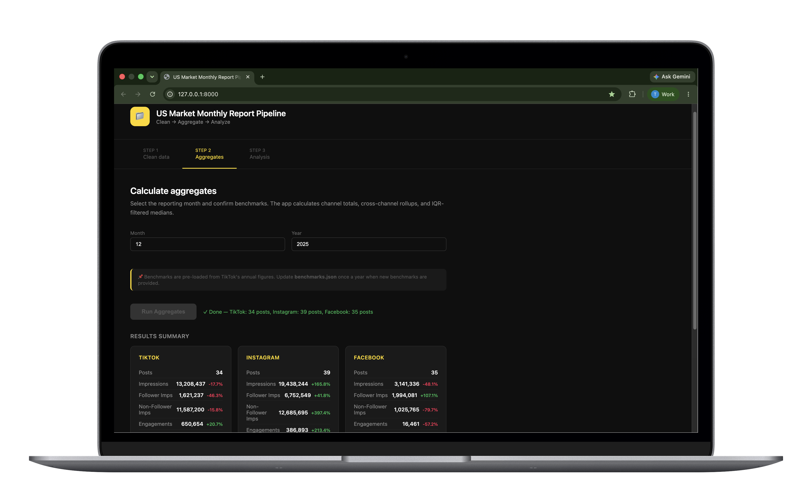

Dumbo Yacht Club
The Lab
A space for imagination, experimentation, and applied data science.
The projects featured here are independent proof-of-concepts built by DYC to demonstrate methodologies and capabilities. Brand names used are for illustrative purposes only and do not imply a client relationship.
Projects
Proof of Concepts
Marketing Mix Modeling
Vuori DTC Measurement Strategy Engine
When click-attribution breaks down, structural media elasticities tell the real story. A zero-cost MMM engine built in Python.
View Project
Social Media Analytics
US Market Social Reporting Pipeline
A three-version evolution from prompt library to proprietary pipeline. And a lesson in where AI adds value and where it does not.
View Project